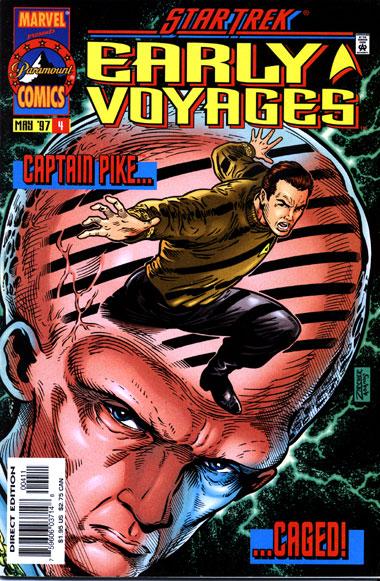

|


|
Gnese
| Episdios I Reflexes
| Palavras do autor | Palavras
do artista Star Trek
Early Voyages, n 04 maio de 1997  Histria: Dan Abnett e Ian Edginton Material produzido por Salvador Nogueira para o Trek Brasilis
Data Estelar: desconhecida Sinopse: A ordenana Colt e a Nmero Um partem em misso de resgate, junto com Spock e outros oficiais, para tentar recuperar o capito Pike, sequestrado e levado ao subsolo do planeta Talos IV por aliengenas locais. Os oficiais da Enterprise ficam surpresos quando somente as mulheres se desmaterializam na sala de transportes. As duas vo parar no subsolo, dentro de uma jaula, onde Pike est preso com uma outra mulher, chamada Vina. Os Talosianos, do lado de fora da jaula, informam ao capito que agora ele pode escolher qual das mulheres ele quer para ser sua companheira. Mas Pike se concentram apenas em manter o dio forte em sua mente, para impedir que os aliengenas consigam manipular seus pensamentos. Naquela situao no mnimo constrangedora, a ordenana Colt rememora seus primeiros dois dias na Enterprise, aps ter sido enviada pelo Comando da Frota Estelar para substituir o ordenana Dermot Cusack, morto em Rigel VII. Foram dias difceis. Pike e a Nmero Um, ambos muito abalados com a recente tragdia Rigeliana, deixaram muito claro a Colt que ela no havia sido requisitada e que seria dispensada e remanejada o mais breve possvel. Ela ainda tentou argumentar com o capito, mas no teve sucesso. O nico que ainda deu alguma ateno recm-chegada foi Nano, o oficial de comunicaes. Na jaula, os Talosianos tambm trataram de influenciar os pensamentos de Colt, gerando a iluso de que ela estava de volta Academia da Frota Estelar, desmanchando seu namoro antes de partir para seu posto na USS Tiberius. Pike percebe que a ordenana est sendo manipulada pelos aliengenas, mas ela deixa claro que no ser persuadida por eles. Quando chega o momento, Pike consegue capturar um dos Talosianos que foi cela para retirar as armas que os oficiais da Enterprise haviam trazido. Ele convence o Talosiano a libert-los, e volta nave com seus tripulantes. Colt finalmente conquista o respeito do capito e da Nmero Um e acaba conseguindo se manter como ordenana na Enterprise.
Comentrios "Nor Iron Bars a Cage" a prova de que to importante quanto a histria a ser contada o modo como ela contada. O enredo aqui essencialmente o que foi visto em "The Cage", mas mesmo assim conta com uma incrvel sensao de novidade, pela forma como os eventos foram relatados. Em vez de perder tempo com uma quadrinizao do episdio-piloto, a dupla de roteiristas Abnett e Edginton rescreve a histria de "The Cage" a partir da perspectiva da ordenana Colt --que agora descobrimos ter sido recm-designada para o posto ingrato de substituir o melhor amigo do capito. Toda aquela tenso entre Pike e Colt vista no piloto perde aquela conotao machista do enredo original e ganha outras texturas e dimenses, graas capacidade de contar os eventos que precederam este episdio por meio da srie em quadrinhos. No mais uma birra pessoal; trata-se de uma difcil "digesto" da morte de Dermot Cusack. A grande novidade trazida pela histria a total mudana de eixo --"The Cage" era extremamente concentrado no capito Pike; aqui, vemos a histria toda criada em razo de Colt. No s percebemos com alegria que um enredo depende basicamente do personagem que est sendo centrado, como descobrimos muito mais sobre a carismtica ordenana de "The Cage". A histria procura no repetir muito o que o leitor, familiarizado com "The Cage", j est careca de saber. Em vez disso, procura preencher as lacunas --o que faz com perfeio. Tanto que o piloto nunca mais ser visto da mesma maneira depois que se l essa histria.
|